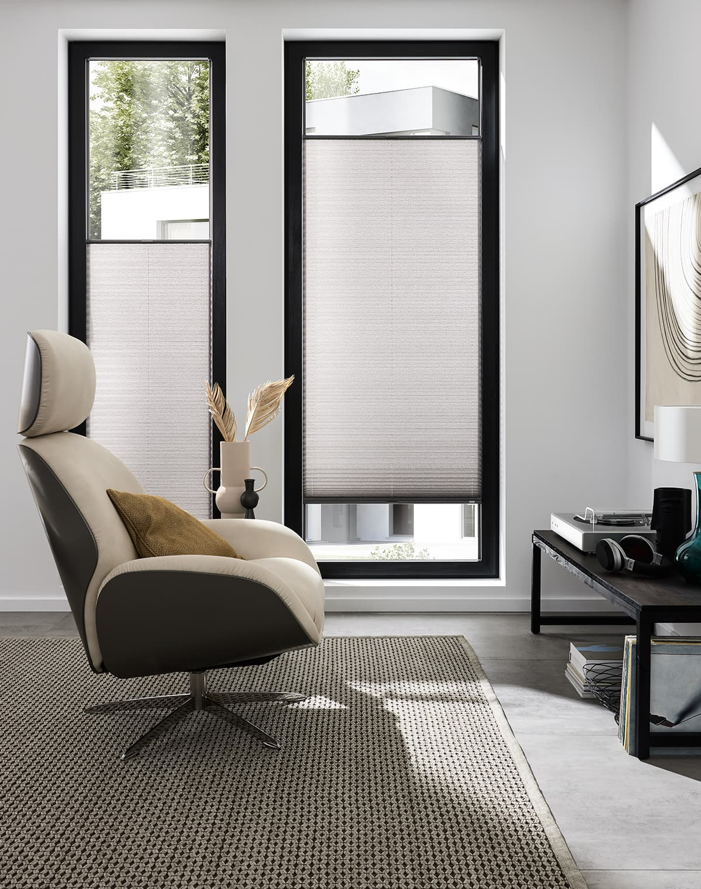
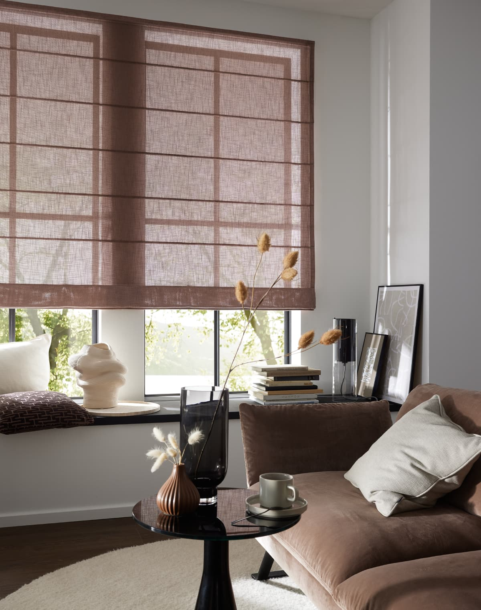

Inomhus- och utomhuslösningar för varje behov.
Solskydd är både praktiskt och dekorativt — det reglerar ljus och värme medan det tillför design till ditt hem. Oavsett om du behöver en markis för terrassen, rullgardiner för fönstret eller lamellgardiner för kontorsrummet, hittar du det hos oss. Vi arbetar med märken som Lindhs och JAB för att erbjuda hög kvalitet och stiliga lösningar för varje behov.

En markis är perfekt för att skapa en skuggig och bekväm uteplats under sommaren. Markiser kan vara manuella eller motoriserade, och finns i ett stort utbud av färger och mönster som passar din husfasad och trädgård. Från klassiska randade markiser till moderna enfärgade — en väl vald markis skapar inte bara skugga utan också ett sommarvykort över terrassen. Vi hjälper dig välja rätt storlek och stil för din utemiljö.
Inomhus solskydd skyddar hemmet från intensiv sol, håller kvar värmen på vintern och skapar privatliv. Vi erbjuder flera alternativ: rullgardiner (enkla och moderna), lamellgardiner (luftiga och minimalistiska), plisségardiner (rynkade och eleganta) och klassiska gardiner (varma och personliga). Varje typ har sitt eget uttryck och praktiska fördelar. Tillsammans hittar vi rätt lösning för varje fönster i ditt hem.
Rullgardiner är enkla, moderna och praktiska. De rullas upp eller ner enligt behov och tar minimal plats när de är öppna. Rullgardiner finns i både mörkläggnings- och ljusdämpande varianter — perfekt för sovrum, vardagsrum eller kontor. Vi erbjuder ett brett urval av färger och texturer som matchar din inredning.

Lamellgardiner, också kallade vertikaljalousier, skapar en luftig och modern känsla. De är perfekta för större fönster och glasdörrar. Plisségardiner är rynkade och eleganta — de passar bra i klassiska hem och skapar en mjuk, tidlös känsla. Båda typerna erbjuder stor flexibilitet när det gäller ljuskontroll. Välj mellan transparenta material som släpper in ljus samtidigt som de skyddar från insyn, eller mörkläggande alternativ för maximal kontroll.
Solskydd är en möjlighet att tillföra färg och personlighet till ditt hem. Från neutrala gråtoner och vita som passar överallt, till djärva mönster som blir ett designelement — valet av solskydd påverkar hur rum känns. Material spelar också roll: syntetiska material är slitstarka och lätta att rengöra, medan naturliga fibrer som linne och bomull andas naturligt och skapar värme. Vi guidar dig genom alternativen så att du får både skönhet och praktik.
Med många alternativ kan det vara svårt att välja. Vår erfarna personal mäter dina fönster, visar prover och guidar dig genom olika lösningar. Vi kan även hjälpa till med montering för en professionell installation.
Besök oss i butiken